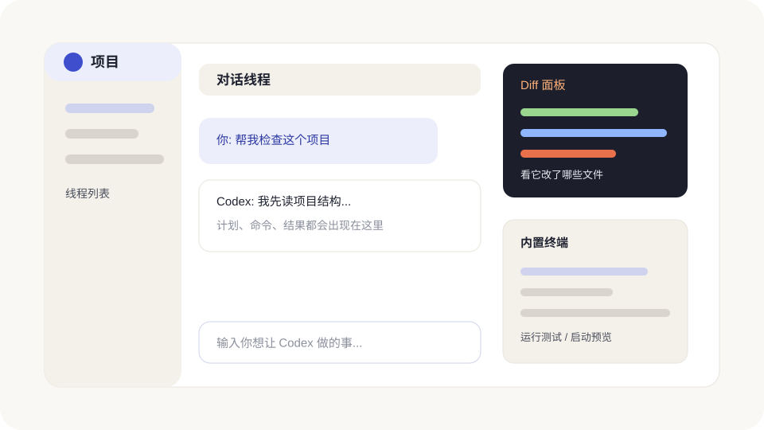

2026 年 8 月功能更新
这次不是简单换几个按钮。Codex 开始更方便地接手你在其他 Agent 里的旧项目、从手机遥控电脑上的任务、回看最近的电脑工作线索，也给 CLI 加上了会话导出、分叉和归档。下面只讲普通用户真正用得上的部分。

先看一张更新地图
| 新变化 | 用人话说 | 最适合谁 |
|---|---|---|
| Computer History | 把近期电脑活动整理成可查看、可删除的时间线和记忆，方便接着上次的工作。 | 经常在多个 App 和网页之间来回切换的人。 |
| 从其他 Agent 导入 | 把 Claude Code、Claude Cowork 或 Cursor 里的设置、项目和近期工作带进来。 | 以前已经在其他 AI 编程工具里干过活的人。 |
| Linux 桌面端预览 | Ubuntu、Debian、Fedora 用户也可以安装 ChatGPT desktop app。 | 使用受支持 Linux 桌面系统的人。 |
| Codex Remote | 手机负责发任务、看进度、批准操作和审查 Diff，真正的工作仍在电脑上跑。 | 离开电脑后还想盯住任务的人。 |
| 插件统一目录 | ChatGPT 和 Codex 使用同一套公开插件目录，CLI 也能浏览市场来源。 | 需要 Gmail、Drive、Slack、Security 等外部能力的人。 |
| CLI 会话管理 | 可以导出完整对话、从旧会话分叉新路线、归档或恢复会话。 | 经常做长任务、想保留工作记录的 CLI 用户。 |
Computer History:帮你找回刚才做到哪
Computer History 是 macOS 桌面端里的可选功能。打开后，它会把你允许的 App 和网站活动整理成文字时间线与记忆。你可以问:“我午饭前在改哪份文档?”或者“把今天反复做的步骤整理成一个技能”。
它替代了早期的 Chronicle 研究预览，但不是简单改名，而是一套重新构建的系统。它默认关闭，目前面向 Pro、Business 和 Enterprise 用户；团队账号还需要管理员先开放。
| 它会做什么 | 它不会做什么 | 你能控制什么 |
|---|---|---|
| 记录允许来源里的点击、输入、快捷键、App 切换和系统可访问文字，并生成文字摘要。 | 不会把屏幕截图放进历史，不录麦克风和系统声音，也不包含隐私浏览活动。 | 选择允许的 App 和网站、随时暂停、查看时间线、删除单条或全部历史。 |
换过工具，也不用从头再来
新版桌面端可以从 Claude Code、Claude Cowork 和 Cursor 导入支持的设置与近期工作。它不会删除原工具里的内容，也不会覆盖你现有的 ChatGPT/Codex 设置。
- 打开 Settings > Import；如果暂时没有单独的 Import 页面，就去 General 找 Import other agent setup。
- 选择要导入的工具，再勾选说明文件、设置、技能、插件、项目或近期聊天。
- 导入结束后，检查哪些插件或连接还需要重新登录授权。
- 需要持续同步时，在 Settings > Import 打开自动更新。
桌面端能导入 Claude Code、Claude Cowork 和 Cursor；CLI 目前支持 Claude Code 与 Cursor。导入的内容可能会被转换成 Codex 使用的 AGENTS.md、config.toml、Skills、Hooks、MCP 配置或子智能体设置，所以完成后最好先让 Codex 解释它带进来了什么。
Linux 也有桌面端了
ChatGPT desktop app 的 Linux 版目前是预览。官方支持 Ubuntu 24.04/26.04 LTS、Debian 13、Fedora 43/44，并提供 x64 与 ARM64 安装包。
- Ubuntu / Debian 下载
.deb。 - Fedora 下载
.rpm。 - 不确定处理器架构时，在终端运行
uname -m；x86_64是 x64，aarch64或arm64是 ARM64。
预览版不代表所有能力都和 macOS、Windows 完全一致。安装时只用官方页面提供的包，不要从陌生网盘或第三方打包站下载。
Codex Remote:手机是遥控器，电脑才是主机
Remote 可以在 ChatGPT 手机 App 里启动、指导、批准和审查 Codex 任务。任务实际运行在已经配对的 Mac 或 Windows 电脑上，所以电脑必须保持开机、在线，并使用同一 ChatGPT 账号和工作区。
- 在电脑端打开 Settings > Connections > Control this Mac or PC，选择 Set up 或 Add。
- 批准远程访问，按提示完成验证。
- 用手机扫描二维码，在同一账号和工作区里确认连接。
- 手机打开 Remote，选择电脑与项目，新建任务或接着已有任务。
8 月更新还改善了断线重连、长任务加载、语音连接和 Diff 审查，并在任务消息加载失败时加入 Retry。外出时适合查进度、补方向、批准清楚的命令；涉及大量代码审查、账号操作或高风险命令，仍建议回电脑处理。
CLI 0.148:会话终于更好整理了
截至 8 月 18 日，官方更新记录中的最新版本是 Codex CLI 0.148.0。通过 npm 安装的用户可以这样升级:
npm install -g @openai/codex@0.148.0 codex --version
| 功能 | 怎么用 | 适合场景 |
|---|---|---|
| 导出完整对话 | 在 TUI 输入 /export，复制到剪贴板或保存成 Markdown 文件。 | 交接、复盘、写工作记录。 |
| 分叉会话 | 使用 codex exec fork 从已有会话另开一条路线；先用 codex exec fork --help 查看当前版本参数。 | 保留原路线，同时试另一种实现。 |
| 归档和恢复 | 在 TUI 的 Resume 会话选择器里归档旧会话，也可以切到归档列表恢复。 | 长时间使用后整理会话列表。 |
| 查看额度或成本估算 | 符合条件的工作区可在 /status、状态栏或终端标题看到估算。 | 控制长任务和多智能体消耗。 |
| Hooks 增强 | Hooks 可以异步运行命令，也可以调用 MCP 工具。 | 高级自动化；新手先审查来源和触发时机。 |
0.147 还加入了 /plugins 插件浏览器、/import 导入流程和 --approve-for-me 自动审查审批。自动审查不等于“什么都自动允许”，但它会改变批准流程；零基础用户先保持默认审批，熟悉任务边界后再考虑。
还在用 GPT-5.4? 现在就换
官方已经说明:2026 年 8 月 31 日起，使用 ChatGPT 账号登录 Codex 的用户将不能再选择 GPT-5.4 和 GPT-5.4 mini。推荐替换关系是:
| 旧模型 | 推荐替换 | 适合 |
|---|---|---|
gpt-5.4 | gpt-5.6-terra | 日常开发、分析和稳定工作流。 |
gpt-5.4-mini | gpt-5.6-luna | 规则清楚、重复、追求速度和效率的任务。 |
别只改当前会话。工作区默认值、保存的模型设置、自定义智能体和定时任务里如果写死了旧模型，也要一起更新。API Key 登录的 Codex 会话和 OpenAI API 是否还能使用旧模型，按官方 API 文档与账号实际权限为准。
升级后做一次 5 分钟检查
- 桌面端确认 Settings 能打开，Codex 项目和旧任务能正常加载。
- CLI 运行
codex --version，确认版本符合你要使用的命令。 - 打开插件页，检查已安装插件是否仍需登录；CLI 安装插件后要新开会话。
- 检查模型默认值，替换 GPT-5.4 / GPT-5.4 mini。
- Remote 用户做一次低风险测试：让手机启动只读检查，再回桌面看结果。
官方资料入口
- ChatGPT & Codex changelog:8 月桌面端、移动端和 CLI 更新。
- Computer History:适用范围、隐私、暂停和删除说明。
- Import from another agent:桌面端和 CLI 导入步骤。
- ChatGPT desktop app for Linux:支持系统与官方安装包。
- Codex Remote:电脑配对、手机操作和审查。
- Plugins:通用插件目录、支持端和安装方式。